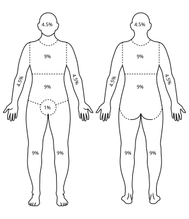

整形外科
傷口照護、燒燙傷處置、皮膚移植與皮瓣重建、手部外傷，涵蓋各科 PGY 必備的整形外科臨床知識。
整形外科評估基礎 Plastic Surgery Assessment
整形外科的核心理念是用最簡單有效的方式重建缺損。重建階梯（Reconstructive Ladder）從最簡單到最複雜依序選擇；重建電梯（Reconstructive Elevator）= 直接選擇最適合的方式，不一定從最低階開始。傷口評估的三大要素：大小、深度、血管供應。
傷口分類 + 縫合時機
傷口污染分類（CDC 手術傷口分類）
| 分類 | 定義 | 感染率 | 處置 |
|---|---|---|---|
| Class I 清潔（Clean） | 無感染；無開腔；無技術缺失；擇期手術 | <2% | 一期縫合（Primary closure） |
| Class II 清潔污染（Clean-contaminated） | 開腔（消化道 / 呼吸道 / 泌尿道）但無污染；輕微技術缺失 | 5-10% | 一期縫合；預防性抗生素 |
| Class III 污染（Contaminated） | 急性炎症（無膿）；消化道溢漏；新鮮外傷傷口（<4 小時） | 20-30% | 考慮延遲縫合；抗生素 |
| Class IV 骯髒感染（Dirty-infected） | 舊的外傷傷口（>4 小時）；穿孔伴糞便污染；膿瘍 | >30% | 開放引流；不縫合；抗生素 |
縫合時機分類
- 一期縫合（Primary closure）：傷後立刻縫合；適合乾淨傷口；<6-8 小時（臉部可延長至 12-24 小時，血供豐富）
- 延遲一期縫合（Delayed primary closure）：傷後 3-5 天等待確認無感染後縫合；適合污染傷口
- 二期癒合（Secondary intention）：讓傷口自然肉芽組織填充癒合；適合感染傷口 / 小缺損；會留疤痕
- 三期縫合（Tertiary / Delayed closure）：觀察一段時間後確認乾淨再縫合
縫合材料速查
| 材料 | 種類 | 適用 |
|---|---|---|
| Nylon（尼龍） | 不可吸收；單股 | 皮膚縫合首選；低反應性；需拆線 |
| Prolene（Polypropylene） | 不可吸收；單股；藍色 | 血管縫合；皮膚；低摩擦力 |
| Vicryl（Polyglactin） | 可吸收；多股；紫色 | 皮下組織；黏膜；筋膜；約 6 週吸收 |
| PDS（Polydioxanone） | 可吸收；單股；紫色 | 筋膜；深部縫合；6 個月吸收；較強 |
| Chromic gut | 可吸收；天然；褐色 | 黏膜；陰道；口腔；10-14 天吸收 |
重建階梯（Reconstructive Ladder）
由簡至繁（優先選最簡單可行的方式）
| 層級 | 方式 | 適應症 |
|---|---|---|
| 1（最簡單） | 直接縫合（Direct closure） | 小缺損；可以無張力縫合 |
| 2 | 二期癒合（Secondary intention） | 小的淺層缺損；感染傷口；血供好的部位（臉、頭皮） |
| 3 | 皮膚移植（Skin graft，STSG/FTSG） | 中等缺損；血管床良好；不需立體重建 |
| 4 | 局部皮瓣（Local flap） | 缺損附近有充足組織；需要帶血供的組織 |
| 5 | 區域皮瓣（Regional flap） | 局部組織不足；需要更大的皮瓣 |
| 6（最複雜） | 游離皮瓣（Free flap，顯微手術） | 大型缺損；特殊部位；需要特定組織成分 |
傷口癒合基本生理
- 止血期（0-幾分鐘）：血小板聚集；纖維蛋白網；血管收縮
- 炎症期（1-5 天）：中性球（1-2 天）→ 巨噬細胞（清除壞死組織）；紅腫熱痛；生長因子釋放
- 增殖期（5-21 天）：肉芽組織形成；膠原蛋白（Type III 早期）；血管新生；傷口收縮（肌纖維母細胞）
- 重塑期（21 天-2 年）：Type III → Type I 膠原蛋白轉換；傷口強度增加；瘢痕成熟（由紅變白、變平）
- 傷口最終強度只有正常皮膚的 80%（無論如何都無法完全恢復）
傷口癒合不良的危險因素
- 全身：糖尿病（高血糖抑制白血球功能）；類固醇（抑制炎症期）；化療 / 放療；營養不良（低蛋白、Vit C / Zinc 缺乏）；周邊血管疾病；吸菸（尼古丁 → 血管收縮）；老年
- 局部：感染；血腫；缺血 / 壞死組織；異物；張力過大；放射性傷口
傷口照護 Wound Care（急慢性傷口 + 負壓治療）
傷口照護的原則：濕潤環境有利癒合（濕潤敷料比乾燥更好）；清除壞死組織（Debridement）是慢性傷口處置的核心；負壓傷口治療（NPWT / VAC）適合大型複雜傷口，可促進肉芽組織生長和減少細菌負荷。
傷口敷料選擇（依傷口狀態）
| 傷口狀態 | 適合敷料 | 特性 |
|---|---|---|
| 乾淨肉芽組織（Granulating） | 泡棉敷料（Foam）；藻酸鹽（Alginate）；水膠體（Hydrocolloid） | 維持濕潤；促進肉芽；適度吸收滲液 |
| 大量滲液（Heavy exudate） | 藻酸鹽（Alginate）；泡棉（Foam）；超強吸收敷料 | 高吸收力；避免浸潤周圍皮膚 |
| 黑色焦痂（Necrotic / Eschar） | 水膠體（Hydrocolloid）；水凝膠（Hydrogel） | 自溶性清創（Autolytic debridement）；軟化焦痂 |
| 感染傷口 | 銀離子敷料（Silver-containing）；碘敷料（Iodine）；抗菌泡棉 | 抗菌；控制細菌負荷；不適合長期使用 |
| 乾燥 / 上皮化中 | 矽膠薄膜（Silicone）；薄水膠體；透明薄膜（Film） | 保護嫩皮；低黏著性；透明可觀察 |
| 骨骼 / 肌腱暴露 | NPWT（負壓治療）；生物敷料；皮瓣覆蓋 | 傳統敷料無效；需要外科介入 |
清創方式（Debridement）
- 手術清創（Surgical）：最快速有效；刀剪直接去除壞死組織；適合大量壞死或感染性傷口
- 自溶性清創（Autolytic）：濕潤敷料讓體內酵素自然溶解壞死組織；最溫和；適合少量壞死；禁止感染傷口
- 酵素清創（Enzymatic）：Collagenase 藥膏（Santyl）；選擇性清除壞死組織；緩慢
- 機械清創（Mechanical）：濕→乾紗布（Wet-to-dry）；沖洗；非選擇性（可能傷及正常組織）；現較少用
- 蛆蟲療法（Maggot therapy）：綠頭蒼蠅幼蟲；高選擇性清創；適合頑固性慢性傷口；台灣較少用
負壓傷口治療（NPWT / VAC）+ 慢性傷口
負壓傷口治療（NPWT = Negative Pressure Wound Therapy / VAC = Vacuum-Assisted Closure）
- 適應症：大型急慢性傷口；開放性腹腔（Open abdomen）；皮膚移植固定（Bolster）；骨骼 / 肌腱暴露的橋接；深部感染傷口清創後；糖尿病足部傷口；壓瘡
- 禁忌：未清創的壞死組織；惡性腫瘤在傷口內；未處理的骨髓炎；裸露血管 / 神經（直接接觸）；瘻管
- 壓力設定：連續模式 -125 mmHg（一般）；間歇模式（促進肉芽，但較不舒適）；敏感部位 / 皮膚移植 → -75 to -100 mmHg
- 機轉：移除過多滲液；↓ 組織水腫；↑ 局部血流；促進肉芽組織生長；↓ 細菌負荷；傷口邊緣拉近
- 換藥頻率：感染傷口 q24-48h；乾淨傷口 q48-72h；皮膚移植固定 q4-7 天
慢性傷口常見類型
| 類型 | 特徵 | 關鍵處置 |
|---|---|---|
| 糖尿病足（Diabetic foot ulcer） | 蹠骨頭 / 足跟；神經病變（感覺↓）；血管病變；感染快速擴散；可能骨髓炎 | 血糖控制；減壓（Off-loading）= 最重要；清創；血管重建評估；ABI 測定 |
| 靜脈性潰瘍（Venous ulcer） | 小腿內側（Gaiter area）；不規則形；滲液多；周圍皮膚色素沉著（Lipodermatosclerosis）；不太痛 | 壓迫治療（Compression therapy，4-layer bandage）= 最重要；潰瘍敷料；靜脈手術（重度） |
| 動脈性潰瘍（Arterial ulcer） | 足趾 / 足跟；邊緣清楚；基底蒼白 / 壞死；疼痛（尤其夜間和抬高時）；ABI <0.6 | 血管重建（Revascularization）= 根本治療；避免壓迫治療；保護足部 |
燒燙傷 Burns（分度 + TBSA 估算 + Parkland Formula）
燒燙傷處置的三大核心：燒傷深度評估（決定是否自行癒合）；TBSA 估算（決定輸液量和轉介標準）；Parkland formula（急性期輸液計算）。吸入性傷害是燒燙傷死亡的最主要原因之一，需早期插管保護氣道。
燒傷深度 + TBSA 估算（Rule of 9）
燒傷深度分類
| 深度 | 舊分類 | 外觀 | 疼痛 | 癒合 |
|---|---|---|---|---|
| 表淺（Superficial） | 一度（1st degree） | 紅、乾、無水泡（如曬傷） | 非常痛 | 3-5 天；不計入 TBSA |
| 表淺部分皮層（Superficial partial-thickness） | 淺二度（Superficial 2nd） | 紅、濕潤、水泡（基底粉紅） | 非常痛（神經末梢暴露） | 7-14 天；無疤痕或輕微 |
| 深部分皮層（Deep partial-thickness） | 深二度（Deep 2nd） | 白/紅混合；乾或潮濕；水泡（基底蒼白） | 較不痛（神經受損） | >21 天；需植皮；留疤痕 |
| 全皮層（Full-thickness） | 三度（3rd degree） | 白色革狀 / 棕黑色焦痂；乾、硬、無彈性 | 無痛（神經完全破壞） | 不會自行癒合；需植皮 |
| 皮下組織（Subdermal） | 四度（4th degree） | 炭化；露出肌肉 / 骨骼 / 肌腱 | 無痛 | 需截肢或大型重建 |
TBSA 估算（成人，Rule of 9）

| 部位 | 成人 TBSA% | 兒童（Lund-Browder） |
|---|---|---|
| 頭部 | 9% | 年齡越小比例越高（嬰兒 18%） |
| 上肢（每側） | 9% | 各 9% |
| 軀幹前面 | 18% | 18% |
| 軀幹後面 | 18% | 18% |
| 下肢（每側） | 18% | 年齡越小比例越低（嬰兒 14%） |
| 會陰 | 1% | 1% |
| 手掌法（Palm rule） | 患者手掌面積 ≈ 1% TBSA | 適合小面積或不規則估算 |
Parkland Formula + 急性燒傷處置
Parkland Formula（急性期輸液）
Parkland：4 mL × 體重（kg）× TBSA% = 前 24 小時 LR 總量
前 8 小時給一半；後 16 小時給另一半（從燒傷時間起算，不是從入院起算）
前 8 小時給一半；後 16 小時給另一半（從燒傷時間起算，不是從入院起算）
- 液體選擇：Lactated Ringer's（LR）= 首選；不用葡萄糖水（低滲 → 加重水腫）；不用膠體（前 24 小時）
- 輸液目標：尿液輸出 0.5-1 mL/kg/h（成人）；1 mL/kg/h（兒童）= 最重要的監測指標
- Modified Brooke Formula：2 mL × kg × TBSA%（較 Parkland 保守；現多數燒傷中心使用）
- 過度輸液（Fluid creep）是現代燒傷的主要問題 → 腹腔室症候群、肺水腫、筋膜室症候群 → 「允許性少輸液」趨勢
急性燒傷處置（ABC 優先）
- A — 氣道：吸入性傷害高風險（臉部燒傷、眉毛睫毛燒焦、喉嚨嘶啞、鼻毛燒焦、密閉空間）→ 早期插管（水腫進展後更困難）
- B — 呼吸：環形胸部全皮層燒傷 → 限制胸廓擴張 → 焦痂切開術（Escharotomy）
- C — 循環：Parkland formula；建立兩條大號 IV（可穿過燒傷部位）；環形肢體燒傷 → Escharotomy（預防筋膜室症候群）
- D — 止痛：Morphine / Fentanyl IV（燒傷非常痛）；Ketamine（換藥時）
- 其他：破傷風預防；NGT（腸麻痺）；Foley（尿量監測）；保溫（燒傷患者低體溫風險高）；避免冰塊（加重組織損傷）；沖水（涼水，非冷水）>20 分鐘
燒傷中心轉介標準（ABA 指引）
- TBSA >10%（部分皮層）或任何全皮層燒傷
- 臉、手、足、生殖器、會陰、主要關節燒傷
- 吸入性傷害；電氣燒傷；化學燒傷
- 合併重大外傷；老年人、兒童、合併症患者
皮膚移植 + 皮瓣 + 顯微重建 Skin Grafts & Flaps
皮膚移植和皮瓣是整形外科的兩大重建工具。皮膚移植（Graft）= 完全切除後移植，依賴受床血管新生存活；皮瓣（Flap）= 保留血供，自帶循環，適合血管床不良或需要立體重建的缺損。游離皮瓣（Free flap）需要顯微手術吻合血管，是重建階梯最高階。
皮膚移植（Skin Graft）+ 其他移植種類
STSG vs FTSG
| STSG（Split-thickness） | FTSG（Full-thickness） | |
|---|---|---|
| 取皮深度 | 表皮 + 部分真皮（0.012-0.018 吋） | 表皮 + 全層真皮 |
| 存活率 | 較高（薄，較易血管化） | 較低（需要更好的受床） |
| 收縮程度 | 較多（Primary + Secondary contracture） | 較少（真皮抑制收縮） |
| 外觀質地 | 較差（光滑、薄、顏色不符） | 較好（接近正常皮膚） |
| 供皮區癒合 | 自行癒合（真皮附屬器殘留） | 需要縫合（缺損大） |
| 供皮區 | 大腿前外側（最常用）；臀部；頭皮（可重複取） | 腹股溝；耳後（Retroauricular）；上眼瞼；前臂 |
| 適應症 | 大面積缺損；燒傷植皮；血管床尚可 | 臉部；手部；關節附近；外觀要求高；較小缺損 |
| Meshing（網狀擴展） | 可 Mesh（1.5:1 到 3:1）→ 擴大覆蓋面積；適合大面積燒傷 | 通常不 Mesh（外觀差） |
移植存活三階段
- 1. Imbibition（血漿滲透，0-48 小時）：移植片從受床滲出的血漿和淋巴液中獲得營養
- 2. Inosculation（血管吻合，48-72 小時）：供體和受床血管端端對接，血流建立
- 3. Revascularization（血管新生，72 小時後）：受床血管長入移植片；完成血供重建
移植失敗原因（記憶：SHIM）
- S — Seroma / Hematoma：移植片和受床之間積血積液 → 阻斷血管化 → 最常見失敗原因 → NPWT Bolster 預防
- H — High bacterial load（感染）：細菌 >10⁵/g → 移植失敗；β-溶血性鏈球菌少量即可造成失敗
- I — Inadequate blood supply（受床血管不良）：放射性傷口；缺血組織；骨骼 / 軟骨暴露
- M — Motion / Shear（剪切力）：移植片位移 → 打破血管連結 → 固定和 Tie-over 敷料很重要
其他移植種類
| 移植種類 | 內容 | 常見供體 / 適應症 |
|---|---|---|
| 複合移植（Composite graft） | 含多種組織成分（皮膚 + 軟骨 / 脂肪） | 耳廓組織 → 鼻翼重建；指尖截斷再植 |
| 骨移植（Bone graft） | 自體骨（Autograft）= 金標準；異體骨（Allograft）；合成骨 | 自體：髂骨嵴（最常用）；腓骨；肋骨；顱骨板 |
| 神經移植（Nerve graft） | 橋接神經缺損（>2-3 cm 無法直接縫合） | 腓腸神經（Sural nerve）= 最常用供體；前臂內側皮神經 |
| 肌腱移植（Tendon graft） | 橋接肌腱缺損 | 掌長肌（Palmaris longus，20% 缺如）；趾長伸肌；股薄肌 |
| 脂肪移植（Fat grafting / Lipofilling） | 自體脂肪注射填充 | 乳房重建；顏面輪廓；疤痕改善；存活率約 40-60% |
皮瓣分類（依血供 + 依移動方式）
依血供分類
| 類型 | 血供 | 特性 |
|---|---|---|
| 隨意型皮瓣（Random pattern） | 真皮下叢（Subdermal plexus） | 無固定血管蒂；長寬比 ≤1.5:1（超過則遠端壞死）；局部小皮瓣常用 |
| 軸型皮瓣（Axial pattern） | 有固定的軸向血管（動脈 + 靜脈） | 可做較長的皮瓣（長寬比不受限）；穿支皮瓣（Perforator flap）屬此類 |
依移動方式分類
| 類型 | 移動方式 | 常見皮瓣 |
|---|---|---|
| 推進皮瓣（Advancement flap） | 沿單一方向推進覆蓋缺損 | V-Y flap；Burrow's triangle 切除 |
| 旋轉皮瓣（Rotation flap） | 圍繞支點旋轉覆蓋缺損 | 頭皮重建；骶部壓瘡 |
| 轉位皮瓣（Transposition flap） | 跨越正常皮膚轉移至缺損 | Z-plasty（疤痕攣縮）；Rhomboid flap；Bilobed flap（鼻部） |
| 島狀皮瓣（Island flap） | 僅保留血管蒂，完全游離皮島 | 指固有動脈島狀皮瓣（手指）；鼻唇溝皮瓣 |
| 游離皮瓣（Free flap） | 完全切斷後顯微手術吻合至受區血管 | DIEP（乳房）；ALT（大腿前外側）；腓骨皮瓣（下頜骨）；背闊肌皮瓣 |
游離皮瓣術後監測（Free Flap Monitoring）
- 監測頻率：術後 24-48 小時 q1h；之後逐漸降低頻率
- 正常皮瓣：溫暖；粉紅；毛細血管充填 1-2 秒；針刺出鮮紅血
- 動脈阻塞：蒼白；冰冷；無毛細血管充填；針刺無血 → 緊急返回手術室（6 小時內）
- 靜脈阻塞（更常見）：紫藍色；腫脹；毛細血管充填過快（<1 秒）；針刺出暗紅血 → 緊急返回手術室
手部外傷 Hand Injuries（肌腱 + 神經 + 斷指再植）
手部外傷評估必須系統性：骨骼（X 光）→ 肌腱（主動活動）→ 神經（感覺 + 運動）→ 血管（Allen test + 毛細血管充填）。屈肌腱損傷需要在 12-24 小時內修復（一期縫合）；延遲修復結果較差。斷指再植適應症嚴格，並非所有斷指都適合。
肌腱損傷 + 神經損傷評估
屈肌腱分區（Flexor Tendon Zone，I-V）
| Zone | 位置 | 臨床重要性 |
|---|---|---|
| Zone I | FDP 止點 → 指淺屈肌（FDS）止點以遠 | 只有 FDP；Jersey finger（撕脫傷） |
| Zone II（No man's land） | A1 滑車 → FDS 止點 | FDP + FDS 同在滑車內；修復最困難；術後粘連高風險 |
| Zone III | 腕橫韌帶遠端 → A1 滑車 | 手掌區域；預後較好 |
| Zone IV | 腕管（Carpal tunnel）內 | 多條肌腱 + 正中神經同行 |
| Zone V | 前臂 | 肌腱 + 神經 + 血管多結構損傷 |
手部神經評估
| 神經 | 感覺區 | 運動功能 | 損傷特徵 |
|---|---|---|---|
| 正中神經（Median） | 拇指 / 食指 / 中指 / 無名指橈側（3.5 指） | 大魚際肌（拇指對掌）；屈肌 | 腕管症候群；「猿手」（Ape hand）；對掌困難 |
| 尺神經（Ulnar） | 無名指尺側 + 小指（1.5 指） | 骨間肌（手指外展/內收）；小魚際；4th/5th 指屈肌 | 「爪形手（Claw hand）」= 4th/5th 指 MCP 過伸 + PIP 屈曲；夾紙試驗（+） |
| 橈神經（Radial） | 手背橈側（拇指背） | 伸腕（最重要）；伸指 | 「垂腕（Wrist drop）」；握力↓（伸腕位才能有力握拳） |
斷指再植（Replantation）+ 手部急症
斷指再植適應症（優先再植）
- 強烈建議再植：拇指（最重要，功能最關鍵）；多指離斷；兒童（再生能力強）；手掌 / 腕部 / 前臂離斷；單指 Zone I 或 II
- 相對禁忌（可考慮不再植）：單指 Zone II（功能恢復有限，活動度差）；嚴重壓碾傷；多發傷患者（優先救命）；長時間熱缺血（>6 小時）；進階年齡 + 嚴重全身疾病
斷指保存和時間限制
- 保存方式：斷指用濕紗布包裹 → 放入塑膠袋密封 → 放入裝有冰塊的容器（間接冷卻，不直接接觸冰塊）；避免浸泡（組織水腫）
- 缺血時間限制：溫缺血（Warm ischemia）<6 小時；冷缺血（Cold ischemia，4°C）<12-24 小時；近端（含肌肉）時間更短
手部其他急症
| 急症 | 特徵 | 處置 |
|---|---|---|
| 屈肌腱鞘感染（Flexor tenosynovitis） | Kanavel's 四徵：(1) 手指梭形腫脹；(2) 屈曲休息位；(3) 沿腱鞘壓痛；(4) 被動伸展時劇痛；S. aureus 最常見 | 緊急手術清洗（Irrigation）+ 抗生素；延誤 → 肌腱壞死 |
| 高壓注射傷（High-pressure injection） | 外觀看起來輕微（小入口），但注射物（油漆、油脂）廣泛播散 → 壞死；非常危險 | 緊急廣泛清創；截指率高；不要被外觀輕微欺騙 |
| 捶碾傷（Crush injury） | 評估筋膜室症候群；骨折；血管神經損傷 | 筋膜切開術（Fasciotomy）；重建 |
整形急症 Plastic Surgery Emergencies（壓瘡 + 化學燒傷）
壓瘡（Pressure ulcer / Pressure injury）是預防重於治療——適當的翻身、減壓設備和皮膚照護可以預防大多數壓瘡。化學燒傷的關鍵是大量清水沖洗（>30 分鐘），中和劑反而可能加重傷害（產熱）。疤痕處置需要時間——6-18 個月等疤痕成熟後再評估手術。
壓瘡分級（NPUAP）+ 預防與處置
NPUAP 壓瘡分期（2016）
| 分期 | 描述 | 處置 |
|---|---|---|
| Stage 1 | 皮膚完整；不可褪色的紅斑（Non-blanchable erythema）；深色皮膚可能難以辨識 | 減壓；保護皮膚；保濕；翻身 q2h |
| Stage 2 | 部分皮層缺損；淺表開放傷口；可能有完整或破裂的水泡；無焦痂 | 濕性敷料（Hydrocolloid / Foam）；減壓；保護；勿清創（水泡完整時） |
| Stage 3 | 全皮層皮膚缺損；皮下脂肪可見；無骨骼 / 肌腱暴露；可能有潛行（Undermining） | 清創；NPWT；敷料；考慮手術（皮瓣） |
| Stage 4 | 全皮層缺損 + 骨骼 / 肌腱 / 肌肉暴露；常有潛行和竇道 | 骨髓炎評估（MRI）；手術清創；皮瓣重建（旋轉皮瓣） |
| Unstageable | 全皮層缺損但被焦痂或腐肉覆蓋，無法評估深度 | 清創後重新分期；腳跟穩定的焦痂可保留（不清創） |
| Deep Tissue Injury（DTI） | 完整皮膚下的深部組織損傷；紫色或栗色；可能快速進展至 Stage 3/4 | 立刻解除壓力；密切監測；保護 |
壓瘡預防（最重要！）
- 翻身：每 2 小時翻身一次（最重要）；側臥 30° 而非 90°（↓ 骨突壓力）
- 減壓設備：氣墊床（Active pressure redistribution）；記憶泡棉；足跟保護
- 皮膚照護：保持乾燥（尿 / 糞失禁處理）；失禁性皮膚炎（IAD）≠ 壓瘡
- 營養：蛋白質 1.25-1.5 g/kg/天；Vit C + Zinc 補充；Albumin >3.5 g/dL
- 好發位置：骶部（最常見）；足跟；坐骨結節；大轉子；後枕部（臥床）
化學燒傷 + 疤痕處置
化學燒傷（Chemical Burns）
化學燒傷 → 立刻大量清水沖洗 >30 分鐘！不要用中和劑（產熱加重傷害）。先脫去沾染衣物。
| 化學物質 | 機轉 | 特殊處置 |
|---|---|---|
| 強酸（Acid） | 凝固性壞死（Coagulative necrosis）→ 自限性焦痂形成（限制深層滲透） | 大量清水沖洗；氫氟酸（HF）= 特殊：Ca²⁺ 螯合 → 低血鈣 → 心律不整 → 葡萄糖酸鈣局部注射 / IV |
| 強鹼（Alkali） | 液化性壞死（Liquefactive necrosis）→ 持續深層滲透（比酸更危險） | 大量清水沖洗；時間更長；水泥燒傷常被低估；眼睛沖洗至 pH 7 |
| 磷（White phosphorus） | 持續燃燒（接觸空氣即燃）；系統毒性（肝、腎、心） | 保持傷口濕潤（隔絕空氣）；硫酸銅溶液（使磷變色以利識別）；暗室下可見磷的發光 |
疤痕處置
| 疤痕類型 | 特徵 | 治療 |
|---|---|---|
| 正常疤痕（Mature scar） | 平坦；白色；界限清楚；無症狀 | 保濕；防曬；等待成熟（6-18 個月） |
| 肥大性疤痕（Hypertrophic） | 隆起；紅；癢；限於原傷口範圍；多在 1-2 年後自行改善 | 矽膠貼片（首選）；壓力治療；類固醇注射（Triamcinolone）；雷射 |
| 蟹足腫（Keloid） | 隆起；超過原傷口範圍；好發胸骨 / 耳垂 / 肩膀；不會自行消退；色素深者好發 | 類固醇注射（一線）；手術切除 + 術後立刻放療 or 類固醇注射；冷凍治療；5-FU 注射；高復發率 |
| 疤痕攣縮（Contracture） | 跨關節 / 功能性部位疤痕攣縮 → 活動受限 | Z-plasty（改變張力方向）；皮膚移植；皮瓣；復健物理治療 |